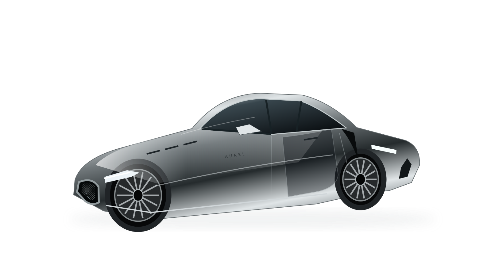
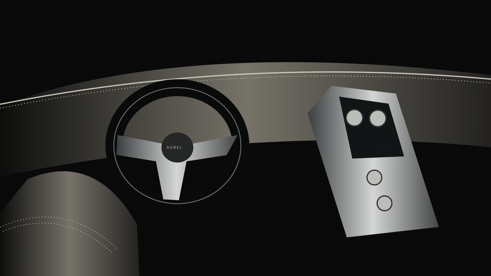

GRAND TOURING · ÉTUDE No. 08
AN EXERCISE
IN RESTRAINT.
当每一个细节，都恰如其分。

DISCOVER AUREL 0801 / 03I — FORM FOLLOWS FEELING
A GRAND TOURER.
NOT AN ARRIVAL.
不是为了赶到某处，而是让每一段路值得停留。长车头、后移座舱与连贯的肩线，把力量收进一个安静的比例里。
II — A PERSONAL EXPRESSION
YOUR SHADE
OF SILENCE.
Argent — 冷银表面，让长而连续的光线描述车身。

III — THE HUMAN TOUCH
MADE TO
BE FELT.
指尖经过的地方，才是工艺的起点。
开孔皮革保留自然纹理，包覆在手掌与座椅接触的位置。图为原创材质概念，不主张实物触感。
THE STUDY IN NUMBERS
- PROPORTION
- 2 + 2 座舱布局概念
- LENGTH
- 4,820 毫米 · 设计目标
- BODY
- GT 长车头双门构型
- EDITION
- 08 原创设计研究